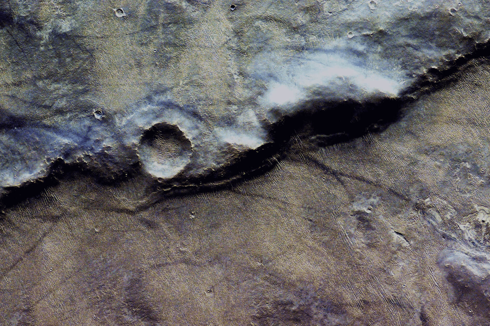

I am fundamentally interested in understanding why a planet’s surface looks the way it does. I work to understand the extent to which endogenic processes shape planetary bodies, the timescales on which those processes operate, and what field-based observations of Earth can tell us about other bodies in this and other solar systems. I am particularly interested in what a planet’s tectonic and lithospheric deformation tell us of its developmental history.